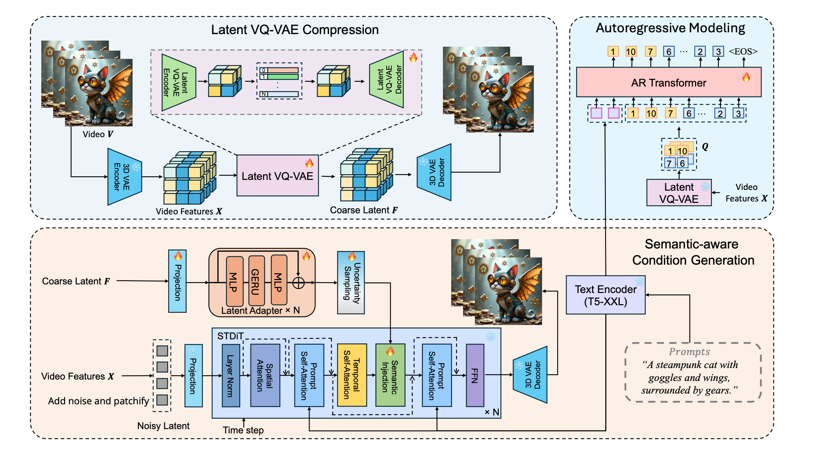

Abstract
Recent advances in the metaverse, spatial intelligence, and multi-modal models have spurred significant interest in 3D human motion generation. Existing efforts in motion synthesis typically utilize either generative transformers with discrete representations or diffusion models with continuous representations. However, the discretization process in generative transformers can introduce motion errors, while the sampling process in diffusion models tends to be slow. In this paper, we propose a novel text-to-motion synthesis method that combines a continuous motion representation with a masked autoregressive model, using the Gaussian mixture model (GMM) to represent the conditional probability distribution. Unlike existing approaches that rely on residual vector quantization, our model employs continuous motion representations derived from the VAE's latent space. This choice streamlines both the training and the inference processes. Specifically, we utilize a masked autoregressive transformer to learn the distributions of continuous motion representations, which are modeled with a learnable Gaussian mixture model. Extensive experiments demonstrate that our model surpasses existing state-of-the-art models in the motion synthesis task.
Method
Our method first generates long-term, coarse-grained discrete visual units (AR codes) autoregressively using a decoder-only Transformer. These discrete AR codes are then segmented and sequentially fed into the DiT model by the proposed semantic injection module, which autoregressively generates high-quality video segments.

Given a text prompt, the autoregressive (AR) model predicts coarse visual latent tokens, which are constructed from a 3D VAE encoder followed by a latent VQ-VAE encoder based on the target video. These predicted visual latent tokens encapsulate both the coarse spatial information and consistent semantic information. Based on these tokens, a latent VQ-VAE decoder generates continuous latent features, which serve as semantic conditions to guide the DiT model with a semantic injection module. To mitigate the noise inevitably introduced during AR inference, we introduce two noise-robust training strategies: 1) coarser visual latent tokens, and 2) uncertainty sampling module.

Long Video Results
"A teddy bear is swimming in the ocean."
"In a mesmerizing underwater world, vibrant coral reefs teem with life, their colors ranging from deep purples to bright oranges. Schools of tropical fish, including angelfish, clownfish, and tangs, dart gracefully through the water, their scales shimmering in the filtered sunlight"
Text-to-Video Results
"A high-quality 3D render of a female character with curly blonde hair and striking blue eyes, wearing a black tank top, standing before a dramatic, fiery backdrop, with a serious expression and detailed, realistic lighting."
"A cute happy Corgi playing in park, sunset"
"A tranquil coastal beach in spring with golden sands and lush green cliffs is suddenly disrupted by intense shaking, turning rhythmic waves chaotic, creating a surreal visual experience"
"Misty mountains at sunrise, with the sun casting a warm glow. Dense fog adds mystery, while a calm river winds through the scene. Cool colors contrast with the warm light. The video focuses on the untouched natural beauty, free of text or human activity."
Progressive Prompts Results
Prompt1: "A majestic dormant volcano rises in the center of a tranquil landscape, with its rugged slopes contrasting the lush forest below, set against clear skies and rolling hills, evoking a sense of solitude and timeless serenity."
Prompt2: "An erupting volcano dominates the scene, with fiery lava and ash contrasting the lush forest below, as dark clouds and lightning fill the sky, capturing the chaos and power of nature's fury"
Video Condition Generation of gmmotion
"A bearded man with short hair, wearing sunglasses and a black leather jacket with red lining, looks upwards seriously in a close-up portrait against a green-to-blue gradient background, suggesting nighttime."
"A high-quality 3D render of a female character with curly blonde hair and striking blue eyes, wearing a black tank top, standing before a dramatic, fiery backdrop, with a serious expression and detailed, realistic lighting."